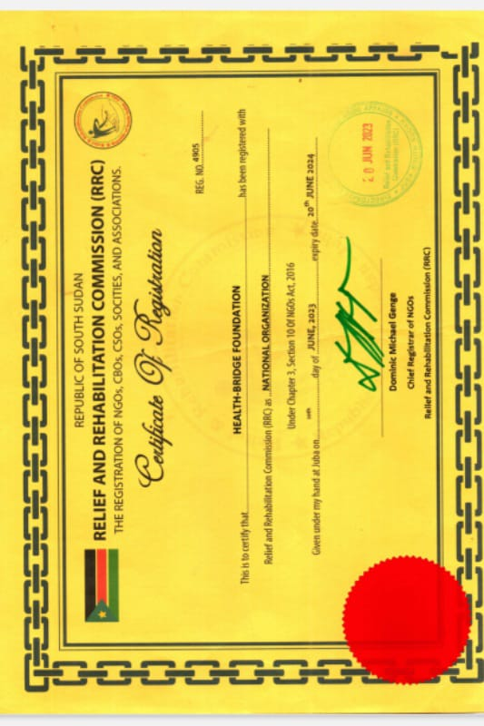

<!DOCTYPE html>
<html lang="en">

<head>
  <meta charset="utf-8">
  <meta content="width=device-width, initial-scale=1.0" name="viewport">

  <title> Health-Bridge Foundation </title>
  <meta content="Health-Bridge Foundation (HBF) is a non-profit organization that is committed to improving the 
health and well-being of disadvantaged and underprivileged communities in South Sudan. We 
believe that everyone deserves access to quality healthcare, regardless of their socioeconomic 
status. 
Our organization works to bridge the gap between healthcare providers and the communities 
they serve by developing innovative programs and initiatives that promote health education, 
disease prevention, and access to healthcare services.
HBF is dedicated to making a positive impact on the health and well-being of individuals and 
families in need. Our team of healthcare professionals, volunteers, and community advocates are 
committed to identifying and addressing the unique healthcare challenges faced by underserved 
communities in South Sudan.
We believe that everyone deserves access to quality healthcare, and we are passionate about 
creating a world where this is a reality. As we begin our work, we are focused on building 
partnerships with local organizations, healthcare providers, and government agencies to develop 
sustainable solutions that empower individuals and communities to take charge of their health.
At HBF, we are excited to embark on our journey to make a difference and create lasting change 
in the communities we serve. We believe that by working together, we can achieve our vision of 
a healthier South Sudan" name="description">
  <meta content=" Health-Bridge Foundation South Sudan Nyoch Enoch" name="keywords">

  <!-- Favicons -->
  <link href="assets/img/favicon.png" rel="icon">
  <link href="assets/img/apple-touch-icon.png" rel="apple-touch-icon">

  <!-- Google Fonts -->
  <link href="https://fonts.googleapis.com/css?family=Open+Sans:300,300i,400,400i,600,600i,700,700i|Raleway:300,300i,400,400i,500,500i,600,600i,700,700i|Poppins:300,300i,400,400i,500,500i,600,600i,700,700i" rel="stylesheet">

  <!-- Vendor CSS Files -->
  <link href="assets/vendor/animate.css/animate.min.css" rel="stylesheet">
  <link href="assets/vendor/aos/aos.css" rel="stylesheet">
  <link href="assets/vendor/bootstrap/css/bootstrap.min.css" rel="stylesheet">
  <link href="assets/vendor/bootstrap-icons/bootstrap-icons.css" rel="stylesheet">
  <link href="assets/vendor/boxicons/css/boxicons.min.css" rel="stylesheet">
  <link href="assets/vendor/glightbox/css/glightbox.min.css" rel="stylesheet">
  <link href="assets/vendor/remixicon/remixicon.css" rel="stylesheet">
  <link href="assets/vendor/swiper/swiper-bundle.min.css" rel="stylesheet">

  <!-- Template Main CSS File -->
  <link href="assets/css/style.css" rel="stylesheet">

</head>

<body>

  <!-- ======= Header ======= -->
  <header id="header" class="fixed-top d-flex align-items-center  header-transparent ">
    <div class="container d-flex align-items-center justify-content-between">

      <div class="logo">
        <!-- <h1><a href="index.html">HBF SSD</a></h1>
       -->
        <a href="index.html"></a>
      </div>

      <nav id="navbar" class="navbar">
        <ul>
          <li><a class="nav-link scrollto active" href="#hero">Home</a></li>
          <li><a class="nav-link scrollto" href="#about">About</a></li>
          <li><a class="nav-link scrollto" href="#services">Services</a></li>
          <li><a class="nav-link scrollto " href="#portfolio">Portfolio</a></li>
         
          <li><a class="nav-link scrollto" href="#team">Team</a></li>
          <li><a class="nav-link scrollto" href="#contact">Contact</a></li>
        </ul>
        <i class="bi bi-list mobile-nav-toggle"></i>
      </nav><!-- .navbar -->

    </div>
  </header><!-- End Header -->

  <!-- ======= Hero Section ======= -->
  <section id="hero" class="d-flex flex-column justify-content-end align-items-center">
    <div id="heroCarousel" data-bs-interval="5000" class="container carousel carousel-fade" data-bs-ride="carousel">

      <!-- Slide 1 -->
      <div class="carousel-item active">
        <div class="carousel-container">
          <h2 class="animate__animated animate__fadeInDown">Welcome to <span>HBF</span></h2>
          <p class="animate__animated fanimate__adeInUp">Welcome to Health-Bridge Foundation. We are dedicated to improving healthcare access and outcomes in underserved communities. Together, let's create a healthier South Sudan through innovative programs and partnerships. Join us on this transformative journey.</p>
          <a href="#about" class="btn-get-started animate__animated animate__fadeInUp scrollto">Read More</a>
        </div>
      </div>

      <!-- Slide 2 -->
      <div class="carousel-item">
        <div class="carousel-container">
          <h2 class="animate__animated animate__fadeInDown">Vision</h2>
          <p class="animate__animated animate__fadeInUp">Our vision is to create a South Sudan where every individual has access to quality healthcare, 
leading to improved health outcomes and enhanced well-being
</p>
          <a href="#about" class="btn-get-started animate__animated animate__fadeInUp scrollto">Read More</a>
        </div>
      </div>

      <!-- Slide 3 -->
      <div class="carousel-item">
        <div class="carousel-container">
          <h2 class="animate__animated animate__fadeInDown">Mission</h2>
          <p class="animate__animated animate__fadeInUp">To bridge the gap between healthcare providers and the communities they serve by developing innovative programs and initiatives that promote health education, disease prevention, and access to healthcare services</p>
          <a href="#about" class="btn-get-started animate__animated animate__fadeInUp scrollto">Read More</a>
        </div>
      </div>

      <a class="carousel-control-prev" href="#heroCarousel" role="button" data-bs-slide="prev">
        <span class="carousel-control-prev-icon bx bx-chevron-left" aria-hidden="true"></span>
      </a>

      <a class="carousel-control-next" href="#heroCarousel" role="button" data-bs-slide="next">
        <span class="carousel-control-next-icon bx bx-chevron-right" aria-hidden="true"></span>
      </a>

    </div>

    <svg class="hero-waves" xmlns="http://www.w3.org/2000/svg" xmlns:xlink="http://www.w3.org/1999/xlink" viewBox="0 24 150 28 " preserveAspectRatio="none">
      <defs>
        <path id="wave-path" d="M-160 44c30 0 58-18 88-18s 58 18 88 18 58-18 88-18 58 18 88 18 v44h-352z">
      </defs>
      <g class="wave1">
        <use xlink:href="#wave-path" x="50" y="3" fill="rgba(255,255,255, .1)">
      </g>
      <g class="wave2">
        <use xlink:href="#wave-path" x="50" y="0" fill="rgba(255,255,255, .2)">
      </g>
      <g class="wave3">
        <use xlink:href="#wave-path" x="50" y="9" fill="#fff">
      </g>
    </svg>

  </section><!-- End Hero -->

  <main id="main">

    <!-- ======= About Section ======= -->
    <section id="about" class="about">
      <div class="container">

        <div class="section-title" data-aos="zoom-out">
          <h2>About</h2>
          <p>Who we are</p>
        </div>

        <div class="row content" data-aos="fade-up">
          <div class="col-lg-6">
            <p>
             Health-Bridge Foundation (HBF) is a non-profit organization that is committed to improving the 
            health and well-being of disadvantaged and underprivileged communities in South Sudan. We 
            believe that everyone deserves access to quality healthcare, regardless of their socioeconomic 
            status. 
            <p>Our organization works to bridge the gap between healthcare providers and the communities 
            they serve by developing innovative programs and initiatives that promote health education, 
            disease prevention, and access to healthcare services.
            HBF is dedicated to making a positive impact on the health and well-being of individuals and 
            families in need. Our team of healthcare professionals, volunteers, and community advocates are 
            committed to identifying and addressing the unique healthcare challenges faced by underserved 
            communities in South Sudan.</p>
            </p> <p> We believe that everyone deserves access to quality healthcare, and we are passionate about 
            creating a world where this is a reality. As we begin our work, we are focused on building 
            partnerships with local organizations, healthcare providers, and government agencies to develop 
            sustainable solutions that empower individuals and communities to take charge of their health.
            At HBF, we are excited to embark on our journey to make a difference and create lasting change 
            in the communities we serve. We believe that by working together, we can achieve our vision of 
            a healthier South Sudan.
            </p>
            <ul>
              <h3>HISTORY AND BACKGROUND</h3>
              <li><i class="ri-check-double-line"></i> Health-Bridge Foundation (HBF) is a non-governmental organization (NGO) based in South 
              Sudan. The organization was founded on the 24th February, 2023 with the aim of improving 
              access to healthcare services and health outcomes in some of the most underprivileged areas of 
              the country.</li>
              <li><i class="ri-check-double-line"></i> HBF is committed to its mission despite the significant challenges facing the country, such as 
            conflict and underdevelopment. We aim to establish partnerships with local communities, 
            government agencies, and other stakeholders to create effective and sustainable health programs.
          </li>
              <li><i class="ri-check-double-line"></i> HBF is highly committed to being a leading voice in the health sector in South Sudan, 
            advocating for improved health policies and increased funding for health programs in the country. 
            The organization's innovative approach to healthcare and its commitment to working with local 
            communities will make it a respected partner and a trusted source of healthcare services in South 
            Sudan</li>
            </ul>
          </div>
          <div class="col-lg-6 pt-4 pt-lg-0">
            <p>
             As a potential partner, partnering with Health-Bridge Foundation South Sudan  presents an invaluable opportunity to make a significant and lasting impact on healthcare in South Sudan. By supporting their innovative programs, you can contribute to building a healthier future for underserved communities, creating sustainable change, and transforming the lives of thousands of individuals in need. Together, let us make a difference and shape a brighter and healthier South Sudan.
            </p>
            <a href="#" class="btn-learn-more">Learn More</a>
          </div>
        </div>

      </div>
    </section><!-- End About Section -->

  <!-- ======= Core Values Section ======= -->
    <section id="about" class="about">
      <div class="container">

        <div class="section-title" data-aos="zoom-out">
          <h2>Core Values</h2>
        
        </div>

        <div class="row content" data-aos="fade-up">

          <h3>Core Values</h3>
          <p>
          We believe in the following core values that guide our work and interactions with stakeholders:
          </p>
          <div class="row content" data-aos="fade-up">
         
                <p> <b>Equity:</b> We believe that every person deserves access to high-quality healthcare, 
                regardless of their background, ethnicity, or socioeconomic status. We strive to promote 
                equity in healthcare delivery by targeting the most vulnerable populations and addressing 
                healthcare disparities.
                </p>
                <p><b>Collaboration:</b> We believe that achieving sustainable healthcare solutions requires 
                collaboration between various stakeholders, including government, non-governmental 
                organizations, healthcare providers, and local communities. We aim to foster partnerships 
                and collaborations that promote innovation, knowledge-sharing, and effective healthcare 
                delivery.
                </p>
                <p><b>Accountability:</b> We believe in being accountable to our beneficiaries, donors, partners, 
                and the communities we serve. We are committed to transparency, ethical conduct, and 
                good governance practices in all our operations.</p>
                <p><b>Empowerment: </b> We believe in empowering individuals and communities to take charge 
                of their own health and well-being. We aim to promote health literacy and self-efficacy 
                through education and community engagement programs that build capacity and promote 
                sustainability</p>
                <p><b>Compassion:</b> We believe in treating all individuals with compassion, empathy, and 
                dignity. We seek to create a culture of care that promotes respect and empathy towards 
                patients, caregivers, and healthcare providers alike.
                </p>
                <p><b>Innovation: </b> We believe in promoting innovative approaches to healthcare delivery that 
                leverage technology, research, and best practices to improve health outcomes and 
                optimize resource utilization.</p>
                <p><b>Inclusivity: </b> We believe in promoting diversity and inclusivity in healthcare, recognizing 
                that different cultural and social contexts require tailored approaches to healthcare 
                delivery.</p>
                <p><b>Quality: </b> We are committed to delivering high-quality healthcare services that meet or 
                exceed global standards, while also addressing the unique needs and challenges of the 
                communities we serve.</p>
                <p><b>Flexibility: </b> We believe in being flexible and adaptable in our approach to healthcare 
                delivery, recognizing that circumstances may change rapidly and require us to adjust our 
                strategies and interventions accordingly</p>
                <p><b>Sustainability: </b> We are committed to promoting sustainable healthcare solutions that are 
                cost-effective, scalable, and have a positive impact on the environment and the 
                communities we serve. We aim to build the capacity of local healthcare systems and 
                empower communities to continue delivering quality healthcare services beyond our 
                intervention</p>
                <p><b>Advocacy: </b> We believe in advocating for policies and practices that promote equitable 
                and sustainable healthcare solutions at the local, national, and international levels.</p>
                <p><b>Learning: </b> We believe in continuous learning and improvement, through monitoring, 
                evaluation, and research activities that inform our strategies and interventions.</p>
                <p><b>Respect: </b> We believe in treating all individuals with respect and dignity, recognizing the 
                importance of cultural sensitivity and inclusivity in healthcare delivery.</p>
                <p> <b>Empathy: </b> We believe in promoting empathy and understanding towards patients, 
                caregivers, and healthcare providers, recognizing the emotional and psychological impact 
                of illness and disability.</p>
                <p><b>Integrity: </b> We believe in upholding the highest ethical standards in our operations and 
                interactions with stakeholders, and in being transparent and accountable in our decisionmaking and reporting</p>
                <p><b>Accessibility: </b>  We believe in promoting equitable access to healthcare services, regardless 
                of gender, age, ethnicity, or socio-economic status, and in working to remove barriers to 
                healthcare delivery in underserved and marginalized communities</p>
                <p><b>Human Rights: </b> We believe in promoting and protecting the human rights of all 
                individuals, including the right to healthcare, and in working to address social and 
                structural inequalities that impact health outcomes</p>
            

          </div>

          </div>

              </div>
      </section><!-- End Core Values Section -->


<!-- ======= OUR UNIQUENESS Section ======= -->
    <section id="about" class="about">
      <div class="container">

        <div class="section-title" data-aos="zoom-out">
          <h2>OUR UNIQUENESS</h2>
        
        </div>

        <div class="row content" data-aos="fade-up">
            <p> What sets the Health-Bridge Foundation apart is our commitment to developing innovative, 
            community-led, and sustainable healthcare solutions that address the root causes of health 
            inequities in South Sudan.</p>
            <p> We prioritize the needs of the communities we serve, and we work collaboratively with local 
            stakeholders to identify and implement context-specific interventions that are culturally sensitive, 
            respectful, and effective.</p>
            <p> Our approach is based on the principles of equity, solidarity, and social justice, and we strive to 
            empower individuals and communities to take ownership of their health and well-being. We are 
            also dedicated to promoting local capacity building and sustainability, and we work to develop 
            strong partnerships with local organizations to promote self-sufficiency and long-term impact.</p>
            <p> Finally, our commitment to excellence and evidence-based practices ensures that we deliver 
            high-quality and effective healthcare interventions that make a meaningful difference in the lives 
            of those we serve.</p>
        </div>

      </div>
    </section><!-- End OUR UNIQUENESS Section -->

    <!-- ======= ORGANIZATIONAL STRUCTURE Section ======= -->
        <section id="about" class="about">
          <div class="container">

            <div class="section-title" data-aos="zoom-out">
              <h2>ORGANIZATIONAL STRUCTURE</h2>
            
            </div>

            <div class="row content" data-aos="fade-up">
             <p>Health-Bridge Foundation (HBF) is a non-governmental organization (NGO) based in South 
              Sudan with a decentralized organizational structure. The organization is led by a Board of 
              Directors, which is responsible for setting strategic goals, providing oversight, and ensuring the 
              organization operates in accordance with its mission and values.</p>
              <p> Under the Board of Directors, HBF has a team of skilled and experienced staff members who are 
              responsible for implementing the organization's programs and initiatives. The staff members 
              work closely with local communities, partner organizations, and government agencies to ensure 
              that HBF's programs are effectively meeting the needs of the people.</p>
              <p>HBF's organizational structure is designed to ensure that the organization remains flexible and 
              responsive to the needs of the people it serves. The organization is committed to transparency 
              and accountability in all of its operations, and regularly reviews its programs and initiatives to 
              ensure that they are meeting their intended goals and objectives.</p>
              <p>At the community level, HBF works closely with local leaders, health workers, and other 
              stakeholders to ensure that its programs are addressing the most pressing health challenges 
              facing the community. The organization also partners with other NGOs, government agencies, 
              and private sector organizations to leverage resources and expertise to maximize the impact of its 
              programs.</p>
            </div>

          </div>
        </section><!-- End ORGANIZATIONAL STRUCTURE Section -->


    <!-- ======= TARGET POPULATION Section ======= -->
        <section id="about" class="about">
          <div class="container">

            <div class="section-title" data-aos="zoom-out">
              <h2>TARGET POPULATION</h2>
            
            </div>

            <div class="row content" data-aos="fade-up">
              <p>Health-Bridge Foundation (HBF) primarily targets vulnerable and marginalized communities in 
            South Sudan. This includes, but is not limited to, children, women, refugees, internally displaced 
            persons (IDPs), and people living with disabilities. HBF aims to reach those who have limited or 
            no access to healthcare services due to financial, geographical, or other barriers.</p>
            <p>HBF's target population also includes communities affected by conflict and emergencies. In such 
            situations, HBF works closely with local authorities and other humanitarian organizations to 
            provide timely and effective healthcare services.
            In addition, HBF focuses on building the capacity of local healthcare workers and health systems 
            in underserved areas. This includes providing training and support to health workers, equipping 
            health facilities with essential medicines and equipment, and strengthening health systems to 
            improve access to quality healthcare services for all.</p>
            <p>HBF also places a special emphasis on reaching out to vulnerable populations such as orphans, 
            widows, and elderly people, who often face significant health challenges and social isolation. 
            Through its various programs and initiatives, HBF aims to empower these individuals and 
            communities by providing them with the resources and support they need to lead healthy and 
            fulfilling lives.</p>
            </div>

          </div>
        </section><!-- End TARGET POPULATION Section -->


      <!-- ======= PARTNERSHIPS AND COLLABORATIONS Section ======= -->
          <section id="about" class="about">
            <div class="container">

              <div class="section-title" data-aos="zoom-out">
                <h2>PARTNERSHIPS AND COLLABORATIONS</h2>
              As a new NNGO that hasn't had its first project yet, HBF is committed to building partnerships 
              and collaborations with organizations that share their commitment to improving health outcomes 
              in South Sudan. We recognize that working together with other organizations can enhance our 
              collective impact and advance our mission.
              While we have not yet formed any partnerships or collaborations with other organizations, we 
              are actively seeking opportunities to do so. We believe that partnerships with organizations in the 
              public, private, and non-profit sectors, as well as academic institutions, can provide valuable 
              knowledge, expertise, and resources to support our work.
              As we begin our work in South Sudan, we are committed to building and maintaining strong 
              partnerships and collaborations with organizations that share our vision of a healthy South Sudan. 
              We believe that these partnerships will be critical to achieving our goals and making a lasting 
              impact on the health of communities in the country.

              </div>

              <div class="row content" data-aos="fade-up">

              </div>

            </div>
          </section><!-- End PARTNERSHIPS AND COLLABORATIONS Section -->

    <!-- ======= Features Section ======= -->
    <section id="features" class="features">
      <div class="container">

        <ul class="nav nav-tabs row d-flex">
          <li class="nav-item col-3" data-aos="zoom-in">
            <a class="nav-link active show" data-bs-toggle="tab" href="#tab-1">
              <i class="ri-gps-line"></i>
              <h4 class="d-none d-lg-block">Mission and Approach</h4>
            </a>
          </li>
          <li class="nav-item col-3" data-aos="zoom-in" data-aos-delay="100">
            <a class="nav-link" data-bs-toggle="tab" href="#tab-2">
              <i class="ri-body-scan-line"></i>
              <h4 class="d-none d-lg-block">Mission Statement and Future Plans </h4>
            </a>
          </li>
          <li class="nav-item col-3" data-aos="zoom-in" data-aos-delay="200">
            <a class="nav-link" data-bs-toggle="tab" href="#tab-3">
              <i class="ri-sun-line"></i>
              <h4 class="d-none d-lg-block">Community Engagement and Participation</h4>
            </a>
          </li>
          <li class="nav-item col-3" data-aos="zoom-in" data-aos-delay="300">
            <a class="nav-link" data-bs-toggle="tab" href="#tab-4">
              <i class="ri-store-line"></i>
              <h4 class="d-none d-lg-block">Vision</h4>
            </a>
          </li>
        </ul>

        <div class="tab-content" data-aos="fade-up">
          <div class="tab-pane active show" id="tab-1">
            <div class="row">
              <div class="col-lg-6 order-2 order-lg-1 mt-3 mt-lg-0">
                <h3>HBF is dedicated to transforming healthcare access and outcomes in underserved communities in South Sudan.</h3>
                <p class="fst-italic">
                  We bridge the gap between healthcare providers and communities through innovative programs and initiatives.
                </p>
                <ul>
                  <p> HBF focuses on thematic areas such as health, nutrition, water, sanitation and hygiene (WASH), and gender-based violence (GBV).</li>
                  <li><i class="ri-check-double-line"></i> Our approach involves collaboration with local organizations, healthcare providers, and government agencies.</li>
                  <li><i class="ri-check-double-line"></i> Collaboration and Partnerships: We forge partnerships with local organizations, healthcare providers, and government agencies to develop and implement sustainable solutions.</li>
                </ul>
                <p>
                 HBF's mission-driven approach and commitment to innovative programs and partnerships make them a catalyst for positive change in South Sudan's healthcare landscape. By bridging the gap and empowering communities, we aim to create lasting improvements in healthcare access and outcomes.
                </p>
              </div>
              <div class="col-lg-6 order-1 order-lg-2 text-center">
                
              </div>
            </div>
          </div>
          <div class="tab-pane active show" id="tab-2">
            <div class="row">
              <div class="col-lg-6 order-2 order-lg-1 mt-3 mt-lg-0">
                <h3>Mission Statement</h3>
                <p class="fst-italic">
                  <b>“To bridge the gap between healthcare providers and the communities they serve”, </b></p>
                  <p>by 
                providing innovative programs and initiatives that promote healthcare education, disease 
                prevention and access to healthcare services.
                At the core of our purpose is a commitment to social justice and equity in healthcare, ensuring 
                that everyone in South Sudan has access to the care they need to live healthy and productive 
                lives
                </p>
                <h3>OBJECTIVES/GOALS</h3>
                <p>Thematic Areas:</p>
                <ul>
                
                <li><i class="ri-check-double-line"></i>Health</li>
                <li><i class="ri-check-double-line"></i>Nutrition</li>
                <li><i class="ri-check-double-line"></i>Water, Sanitation and Hygiene (WASH)</li>
                <li><i class="ri-check-double-line"></i>Gender-Based Violence (GBV)</li>
                </ul>
                <p>Building on our thematic areas of focus, HBF has set the following objectives (goals) to achieve 
                its purpose:</p>

                <ul>

                  <li><i class="ri-check-double-line"></i><b>To increase healthcare education and awareness:</b> We aim to promote healthcare
                  education and awareness among underserved communities in South Sudan through 
                  innovative programs and outreach initiatives. By providing access to accurate and reliable 
                  healthcare information, we seek to empower individuals and communities to make 
                  informed decisions about their health.</li>

                  <li><i class="ri-check-double-line"></i>
                  <b>To improve access to healthcare services and resources:</b> We aim to improve access to 
                  quality healthcare services and resources for underserved populations in South Sudan. 
                  Through partnerships with local healthcare providers, we seek to expand the availability 
                  and affordability of healthcare services, and increase access to essential medicines and 
                  medical supplies.</li>

                  <li><i class="ri-check-double-line"></i><b>To enhance healthcare infrastructure:</b> We aim to support the development and 
                  enhancement of healthcare infrastructure in South Sudan. By providing technical 
                  assistance and resources to healthcare facilities and providers, we seek to improve the 
                  quality and availability of healthcare services</li>


                  <li><i class="ri-check-double-line"></i><b>To promote health equity:</b> We aim to promote health equity by addressing the social 
                  determinants of health that contribute to health disparities in South Sudan. By advocating 
                  for policies and initiatives that promote social justice and equity in healthcare delivery, 
                  we seek to reduce the barriers that prevent individuals and communities from accessing 
                  the care they need. </li>

                  <li><i class="ri-check-double-line"></i><b>To promote preventative healthcare:</b> We aim to promote preventative healthcare 
                  initiatives that empower individuals and communities to take proactive steps to maintain 
                  their health. Through education and awareness programs, we seek to promote healthy 
                  lifestyle choices and preventative healthcare practices.</li>


                  <li><i class="ri-check-double-line"></i><b>To support healthcare workforce development:</b> We aim to support the development 
                  and training of healthcare workers in South Sudan. By providing training and resources to 
                  healthcare providers, we seek to improve the quality of healthcare services and increase 
                  access to specialized care.</li>

                  <li><i class="ri-check-double-line"></i><b>To promote community engagement and participation:</b> We aim to promote 
                  community engagement and participation in healthcare decision-making processes. By 
                  working closely with communities, we seek to develop healthcare programs and 
                  initiatives that are tailored to the specific needs and challenges facing each community.</li>


                  <li><i class="ri-check-double-line"></i><b>To support research and innovation:</b> We aim to support research and innovation in 
                  healthcare in South Sudan. By collaborating with local and international partners, we 
                  seek to identify and implement new and innovative approaches to healthcare delivery, 
                  and promote evidence-based practices in healthcare.</li>

                  <li><i class="ri-check-double-line"></i><b>To address maternal and child health:</b> We aim to improve maternal and child health 
                  outcomes in South Sudan by providing education, resources, and support to mothers and 
                  families. Through partnerships with local healthcare providers, we seek to expand access 
                  to essential maternal and child health services and improve the quality of care.</li>

                  <li><i class="ri-check-double-line"></i><b>To address communicable diseases:</b> We aim to reduce the prevalence and impact of 
                  communicable diseases, such as malaria, tuberculosis, and HIV/AIDS, in South Sudan. 
                  By collaborating with local healthcare providers and implementing evidence-based 
                  interventions, we seek to improve disease prevention, diagnosis, and treatment. </li>
                  <li><i class="ri-check-double-line"></i> <b>To address non-communicable diseases:</b> We aim to address the growing burden of noncommunicable diseases, such as diabetes, cardiovascular disease, and cancer, in South 
                  Sudan. Through education and awareness programs, we seek to promote healthy lifestyle 
                  choices and preventative healthcare practices that can help reduce the risk of these 
                  diseases</li>


                   <li><i class="ri-check-double-line"></i><b>To provide humanitarian relief:</b> We aim to provide humanitarian relief to populations 
                  affected by conflict, displacement, and natural disasters in South Sudan. By collaborating 
                  with local and international partners, we seek to provide essential healthcare services and 
                  supplies to vulnerable populations in crisis. </li>

                  <li><i class="ri-check-double-line"></i><b>To promote mental health and provide psychosocial support:</b> We aim to promote 
                  mental health awareness and provide resources and support for individuals struggling 
                  with mental health issues in South Sudan. Through education and advocacy, we seek to 
                  reduce stigma around mental health and improve access to mental health services and 
                  support.</li>

                  <li><i class="ri-check-double-line"></i><b>To address environmental health:</b> We aim to promote environmental health in South 
                  Sudan by addressing issues such as clean water access, sanitation, and air quality. 
                  Through partnerships with local communities, we seek to develop sustainable solutions 
                  that promote environmental health and support healthy living conditions.</li>

                  <li><i class="ri-check-double-line"></i><b>To address health disparities:</b> We aim to address health disparities in South Sudan by 
                  targeting populations that experience disproportionate barriers to healthcare access and 
                  delivery, including women, children, refugees, and rural communities. Through targeted 
                  interventions and partnerships with local organizations, we seek to improve healthcare 
                  equity and reduce disparities in health outcomes.</li>

                  <li><i class="ri-check-double-line"></i><b>To promote health system strengthening:</b> We aim to promote health system 
                  strengthening in South Sudan by supporting the development of robust healthcare 
                  infrastructure, including healthcare delivery systems, healthcare workforce development, 
                  and healthcare financing. Through partnerships with local and international organizations, 
                  we seek to build sustainable healthcare systems that can support improved health 
                  outcomes for all.</li>

                  <li><i class="ri-check-double-line"></i><b>To promote health education:</b> We aim to promote health education in South Sudan by 
                  providing education and training to communities and healthcare workers. Through 
                  workshops, outreach programs, and other educational initiatives, we seek to improve 
                  health literacy and empower individuals to take charge of their own health and well-being.</li>

                  <li><i class="ri-check-double-line"></i><b>To address gender-based violence:</b> We aim to address gender-based violence in South 
                  Sudan by raising awareness about this issue and providing resources and support for 
                  victims. Through partnerships with local organizations, we seek to promote gender 
                  equality and women's empowerment and work towards a safer and more equitable society.<li><i class="ri-check-double-line"></i>

                </ul>


                <h3>Future Plans</h3>
                <p>We have ambitious plans and a clear vision for the future. Here are our key areas of focus:</p>
                <ul>
                  <li><i class="ri-check-double-line"></i> <b>Scaling Up Programs:</b> HBF aims to scale up its existing successful programs to reach 
                  even more communities in need. We will work towards expanding our healthcare 
                  services, education initiatives, and community outreach programs to ensure equitable 
                  access to quality healthcare for all.</li>
                  <li><i class="ri-check-double-line"></i> Their approach involves collaboration with local organizations, healthcare providers, and government agencies.</li>
                  <li><i class="ri-check-double-line"></i> <b>Strengthening Partnerships:</b> We recognize the importance of partnerships in achieving 
                  our goals. HBF will actively seek collaborations with local and international 
                  organizations, government agencies, and community stakeholders. By leveraging 
                  collective expertise and resources, we can maximize our impact and create sustainable 
                  change.</li>

                  <li><i class="ri-check-double-line"></i> <b>Innovation and Technology:</b> HBF acknowledges the transformative power of 
                  innovation and technology in healthcare. We will explore opportunities to harness digital 
                  solutions, telemedicine, and other technological advancements to enhance healthcare 
                  delivery, improve data management, and increase efficiency in our programs.</li>

                  <li><i class="ri-check-double-line"></i> <b>Advocacy and Policy Influence:</b> HBF will continue to advocate for policies and 
                  practices that promote equitable access to healthcare, strengthen healthcare systems, and 
                  address the underlying social determinants of health. We will actively engage with 
                  policymakers, community leaders, and other stakeholders to shape health policies and 
                  contribute to the development of a robust healthcare framework</li>

                  <li><i class="ri-check-double-line"></i> <b>Research and Knowledge Generation:</b> HBF recognizes the importance of evidencebased approaches. We will invest in research and knowledge generation to better 
                  understand the healthcare challenges specific to South Sudan. By generating new insights, we can develop innovative solutions, influence policy discussions, and contribute to the 
                  broader knowledge base in global health.
                  </li>

                <li><i class="ri-check-double-line"></i><b>Community Empowerment:</b> HBF is committed to empowering individuals and 
                communities to take control of their health. We will prioritize community engagement 
                and participation, working hand in hand with local leaders, community health workers, 
                and volunteers to design and implement programs that address their unique needs and 
                aspirations.

                </li>

                <li><i class="ri-check-double-line"></i><b>Sustainable Financing:</b> To ensure the sustainability of our programs, HBF will explore 
                diverse funding sources and income-generating initiatives. We will develop partnerships 
                with social enterprises, explore impact investing opportunities, and engage in innovative 
                fundraising strategies to support our long-term vision.

                </li>
                </ul>
                <p>
                 Through our future plans, we aspire to make a lasting impact, foster sustainable change, and 
                  contribute to the overall development and prosperity of South Sudan. Together, we can build a 
                  healthier, more resilient nation.
                </p>
              </div>
              
            </div>
          </div>
          <div class="tab-pane" id="tab-3">
            <div class="row">
              <div class="col-lg-6 order-2 order-lg-1 mt-3 mt-lg-0">
                <h3>Community Engagement and Participation</h3>
                <p>
                  HBF SSD recognizes the importance of community engagement and participation in achieving sustainable healthcare improvements
                </p>
                <ul>
                  <li><i class="ri-check-double-line"></i> Tailored Healthcare Programs: HBF SSD works closely with communities to develop healthcare programs and initiatives that address their specific needs and challenges.</li>
                  <li><i class="ri-check-double-line"></i> Barriers to Access: They target populations facing disproportionate barriers to healthcare access and delivery, such as women, children, refugees, and rural communities.</li>
                  <li><i class="ri-check-double-line"></i> Collaborative Decision-making: They actively engage with communities to involve them in healthcare decision-making processes.</li>
                </ul>
                <p class="fst-italic">
                HBF SSD's emphasis on community engagement and participation enhances the relevance and effectiveness of their healthcare interventions. By working hand-in-hand with communities, they foster sustainable change and ensure that healthcare programs address the unique needs of each community.
                </p>
              </div>
              <div class="col-lg-6 order-1 order-lg-2 text-center">
                
              </div>
            </div>
          </div>
          <div class="tab-pane" id="tab-4">
            <div class="row">
              <div class="col-lg-6 order-2 order-lg-1 mt-3 mt-lg-0">
                <h3>Values and Vision</h3>
                <p>
                  HBF SSD is guided by core values and a vision that drives their work and sets the direction for their future impact.
                </p>
                <ul>
                  <li><i class="ri-check-double-line"></i> Vision for a Healthier South Sudan: They envision a future where quality healthcare is accessible to everyone in South Sudan, irrespective of their socioeconomic status.</li>
                  <li><i class="ri-check-double-line"></i> Equity and Social Justice: HBF SSD upholds the values of equity and social justice, advocating for equal access to healthcare services for all individuals.</li>
                  <li><i class="ri-check-double-line"></i> Policy Advocacy and Funding: HBF SSD actively advocates for improved health policies and increased funding to support healthcare programs in the country.</li>
                </ul>
              </div>
              <div class="col-lg-6 order-1 order-lg-2 text-center">
                
              </div>
            </div>
          </div>
        
          </div>

      </div>
    </section><!-- End Features Section -->

    <!-- ======= Cta Section ======= -->
    <section id="cta" class="cta">
      <div class="container">

        <div class="row" data-aos="zoom-out">
          <div class="col-lg-9 text-center text-lg-start">
            <h3>Call To Action</h3>
            <p> Join Health-Bridge Foundation  on our mission to transform healthcare in underserved communities. Your support can make a tangible difference in the lives of thousands. Together, we can bridge the gap between healthcare providers and communities, promote health education, and improve access to quality healthcare services. Whether through funding, partnerships, or volunteering, your involvement is vital in creating a healthier South Sudan. Join us today and be a catalyst for positive change. Together, let's build a future where every individual has equitable access to the care they deserve.</p>
          </div>
          <div class="col-lg-3 cta-btn-container text-center">
            <a class="cta-btn align-middle" href="#">Call To Action</a>
          </div>
        </div>

      </div>
    </section><!-- End Cta Section -->

    <!-- ======= Services Section ======= -->
    <section id="services" class="services">
      <div class="container">

        <div class="section-title" data-aos="zoom-out">
          <h2>Thematic Areas</h2>
          <p>What we do offer</p>
        </div>

        <div class="row">
          <div class="col-lg-4 col-md-6">
            <div class="icon-box" data-aos="zoom-in-left">
              <div class="icon"><i class="bi bi-briefcase" style="color: #ff689b;"></i></div>
              <h4 class="title"><a href="">Healthcare</a></h4>
              <p class="description">Health is a fundamental aspect of well-being and quality of life. At Health-Bridge Foundation (HBF), we are committed to improving health outcomes and ensuring access to quality healthcare for disadvantaged and underprivileged communities. Through our health programs, we aim to promote health education, disease prevention, and access to essential healthcare services. We work closely with local healthcare providers, community advocates, and government agencies to address the unique healthcare challenges faced by underserved populations. Our initiatives focus on increasing healthcare awareness, improving healthcare infrastructure, supporting healthcare workforce development, promoting preventative healthcare practices, and addressing maternal and child health, as well as communicable and non-communicable diseases. By empowering individuals and communities to take charge of their health, we strive to create a healthier South Sudan where everyone has access to the care they need to lead productive and fulfilling lives.</p>
            </div>
          </div>
          <div class="col-lg-4 col-md-6 mt-5 mt-md-0">
            <div class="icon-box" data-aos="zoom-in-left" data-aos-delay="100">
              <div class="icon"><i class="bi bi-book" style="color: #e9bf06;"></i></div>
              <h4 class="title"><a href="">WASH</a></h4>
              <p class="description">Access to clean water, sanitation facilities, and good hygiene practices is crucial for promoting health and preventing diseases. At HBF, we prioritize the WASH thematic area to address the challenges related to water, sanitation, and hygiene in underserved communities. Our WASH programs aim to improve access to clean water sources, establish sanitation facilities, and promote hygienic practices within communities, schools, and healthcare facilities. We work closely with local stakeholders, including communities, government agencies, and partners, to develop sustainable WASH solutions. By advocating for improved WASH infrastructure, promoting hygiene education, and supporting water and sanitation initiatives, we strive to create healthier environments and reduce the burden of waterborne diseases. Through our WASH efforts, we aim to empower communities to practice proper hygiene and have access to safe water and sanitation facilities, thus improving their overall health and well-being.</p>
            </div>
          </div>

          <div class="col-lg-4 col-md-6 mt-5 mt-lg-0 ">
            <div class="icon-box" data-aos="zoom-in-left" data-aos-delay="200">
              <div class="icon"><i class="bi bi-card-checklist" style="color: #3fcdc7;"></i></div>
              <h4 class="title"><a href="">Nutrition</a></h4>
              <p class="description">Nutrition plays a vital role in overall health and well-being. At HBF, we recognize the importance of addressing nutrition-related challenges faced by communities in South Sudan. Through our nutrition programs, we aim to improve access to nutritious food, promote healthy eating habits, and address malnutrition and food insecurity. We work with local communities, healthcare providers, and partners to provide nutrition education, support agricultural initiatives, and enhance food production and distribution systems. Our programs also focus on maternal and child nutrition, ensuring that women and children receive the essential nutrients they need for healthy growth and development. By prioritizing nutrition, we aim to reduce the prevalence of malnutrition, improve health outcomes, and enhance the overall quality of life for individuals and families in South Sudan.</p>
            </div>
          </div>
          <div class="col-lg-4 col-md-6 mt-5">
            <div class="icon-box" data-aos="zoom-in-left" data-aos-delay="300">
              <div class="icon"><i class="bi bi-binoculars" style="color:#41cf2e;"></i></div>
              <h4 class="title"><a href="">GBV</a></h4>
              <p class="description">Gender-based violence (GBV) is a human rights violation that affects individuals and communities worldwide, including South Sudan. At HBF, we are committed to addressing GBV and creating a safer and more equitable society. Our GBV programs focus on raising awareness about GBV, providing support to survivors, and advocating for gender equality and women's empowerment. We work collaboratively with local organizations, government agencies, and community leaders to combat GBV through education, prevention, and response strategies. Our initiatives aim to empower women and girls, promote gender equality, and create supportive environments that foster respect and dignity for all. By addressing GBV, we aim to contribute to the overall well-being of individuals and communities, enabling them to live free from violence and discrimination.</p>
            </div>
          </div>

       
        </div>

      </div>
    </section><!-- End Services Section -->

    <!-- ======= Portfolio Section ======= -->
    <section id="portfolio" class="portfolio">
      <div class="container">

        <div class="section-title" data-aos="zoom-out">
          <h2>Portfolio</h2>
          <p>What we've done</p>
        </div>

        <ul id="portfolio-flters" class="d-flex justify-content-end" data-aos="fade-up">
          <li data-filter="*" class="filter-active">All</li>
          <li data-filter=".filter-app">Activites</li>
          <li data-filter=".filter-card">Reach Out</li>
          <li data-filter=".filter-web">Communties</li>
        </ul>

        <div class="row portfolio-container" data-aos="fade-up">

          <div class="col-lg-4 col-md-6 portfolio-item filter-app">
            <div class="portfolio-img"></div>
            <div class="portfolio-info">
              <h4>Certificate of registration</h4>
              <p></p>
              <a href="assets/img/portfolio/portfolio-1.jpg" data-gallery="portfolioGallery" class="portfolio-lightbox preview-link" title="App 1"><i class="bx bx-plus"></i></a>
              <a href="" class="details-link" title="More Details"><i class="bx bx-link"></i></a>
            </div>
          </div>

          <div class="col-lg-4 col-md-6 portfolio-item filter-web">
            <div class="portfolio-img"></div>
            <div class="portfolio-info">
              <h4>Certificate of Registration</h4>
              <p>We are fully registered</p>
              <a href="assets/img/portfolio/portfolio-2.jpg" data-gallery="portfolioGallery" class="portfolio-lightbox preview-link" title="Web 3"><i class="bx bx-plus"></i></a>
              <a href="" class="details-link" title="More Details"><i class="bx bx-link"></i></a>
            </div>
          </div>

          <div class="col-lg-4 col-md-6 portfolio-item filter-app">
            <div class="portfolio-img"></div>
            <div class="portfolio-info">
              <h4>HBF Constitution</h4>
              <p></p>
              <a href="assets/img/portfolio/portfolio-3.jpeg" data-gallery="portfolioGallery" class="portfolio-lightbox preview-link" title="App 2"><i class="bx bx-plus"></i></a>
              <a href="" class="details-link" title="More Details"><i class="bx bx-link"></i></a>
            </div>
          </div>


        </div>

      </div>
    </section><!-- End Portfolio Section -->


    <!-- ======= F.A.Q Section ======= -->
    <section id="faq" class="faq">
      <div class="container">

        <div class="section-title" data-aos="zoom-out">
          <h2>F.A.Q</h2>
          <p>Frequently Asked Questions</p>
        </div>

        <ul class="faq-list">

          <li>
            <div data-bs-toggle="collapse" class="collapsed question" href="#faq1">How can I get involved with Health-Bridge Foundation ?<i class="bi bi-chevron-down icon-show"></i><i class="bi bi-chevron-up icon-close"></i></div>
            <div id="faq1" class="collapse" data-bs-parent=".faq-list">
              <p>
                HBF welcomes individuals and organizations who are passionate about making a difference in healthcare. You can get involved by volunteering your time, skills, or expertise, or by exploring partnership opportunities. Visit our website's "Get Involved" page to learn more about specific ways to contribute.
              </p>
            </div>
          </li>

          <li>
            <div data-bs-toggle="collapse" href="#faq2" class="collapsed question">What specific healthcare programs and initiatives does HBF offer? <i class="bi bi-chevron-down icon-show"></i><i class="bi bi-chevron-up icon-close"></i></div>
            <div id="faq2" class="collapse" data-bs-parent=".faq-list">
              <p>
                HBF offers a range of healthcare programs and initiatives aimed at improving access, education, and outcomes in underserved communities. These include health education campaigns, initiatives to address specific health issues (e.g., maternal and child health, communicable diseases), healthcare infrastructure development projects, and training programs for healthcare workers. Visit our website or reach out to us for more detailed information on our current programs.
              </p>
            </div>
          </li>

          <li>
            <div data-bs-toggle="collapse" href="#faq3" class="collapsed question">How does HBF ensure sustainability and long-term impact in its projects?<i class="bi bi-chevron-down icon-show"></i><i class="bi bi-chevron-up icon-close"></i></div>
            <div id="faq3" class="collapse" data-bs-parent=".faq-list">
              <p>
                HBF is committed to ensuring sustainability and long-term impact in its projects. We prioritize building strong partnerships with local organizations, healthcare providers, and government agencies. By working collaboratively, we ensure that projects are locally driven and meet the specific needs of the communities we serve. Additionally, we focus on capacity-building, knowledge transfer, and community engagement to ensure lasting impact beyond the duration of individual projects.
              </p>
            </div>
          </li>

          <li>
            <div data-bs-toggle="collapse" href="#faq4" class="collapsed question">Can individuals or organizations donate or contribute to HBF's efforts, and if so, how?<i class="bi bi-chevron-down icon-show"></i><i class="bi bi-chevron-up icon-close"></i></div>
            <div id="faq4" class="collapse" data-bs-parent=".faq-list">
              <p>
                Yes, individuals and organizations can contribute to HBF's efforts through donations or by offering support in various forms. You can make a financial contribution through our website or explore other ways to support us, such as in-kind donations, fundraising initiatives, or corporate partnerships. Visit our website's "Donate" or "Support Us" section to explore the different ways you can contribute to our mission.
              </p>
            </div>
          </li>

          <li>
            <div data-bs-toggle="collapse" href="#faq5" class="collapsed question">How does Health-Bridge Foundation  measure the impact of its programs? <i class="bi bi-chevron-down icon-show"></i><i class="bi bi-chevron-up icon-close"></i></div>
            <div id="faq5" class="collapse" data-bs-parent=".faq-list">
              <p>
                HBF employs a robust monitoring and evaluation framework to measure the impact of its programs. We collect data on key indicators and outcomes, conduct assessments, and engage in regular reporting. This helps us track progress, identify areas for improvement, and ensure that our interventions are making a tangible difference in the lives of the communities we serve.
              </p>
            </div>
          </li>

          <li>
            <div data-bs-toggle="collapse" href="#faq6" class="collapsed question">Does Health-Bridge Foundation  collaborate with other organizations or government agencies? <i class="bi bi-chevron-down icon-show"></i><i class="bi bi-chevron-up icon-close"></i></div>
            <div id="faq6" class="collapse" data-bs-parent=".faq-list">
              <p>
               Yes, HBF believes in the power of collaboration. We actively seek partnerships with local organizations, healthcare providers, and government agencies to maximize our impact and ensure the sustainability of our programs. These collaborations allow us to leverage collective expertise, share resources, and work together towards our shared goals of improving healthcare access and outcomes.
              </p>
            </div>
          </li>

        </ul>

      </div>
    </section><!-- End F.A.Q Section -->

    <!-- ======= Team Section ======= -->
    <section id="team" class="team">
      <div class="container">

        <div class="section-title" data-aos="zoom-out">
          <h2>Team</h2>
          <p>Our Hardworking Team</p>
        </div>

        <div class="row">

          <div class="col-lg-3 col-md-6 d-flex align-items-stretch">
            <div class="member" data-aos="fade-up">
              <div class="member-img">
                
                <div class="social">
                  <a href="https://twitter.com/anuoldeng"><i class="bi bi-twitter"></i></a>
                  <a href="https://www.linkedin.com/in/anuol-deng-0193a933/?originalSubdomain=uk"><i class="bi bi-linkedin"></i></a>
                </div>
              </div>
              <div class="member-info">
                <h4>Anuol Deng Kuoreng, Barrister, LLB, BVC, PDG, LLM.</h4>
                <span>Chairperson, HBF Board of Directors.</span>
              </div>
            </div>
          </div>

          <div class="col-lg-3 col-md-6 d-flex align-items-stretch">
            <div class="member" data-aos="fade-up" data-aos-delay="100">
              <div class="member-img">
                
                <div class="social">
                  <a href="https://twitter.com/jacoblongar?lang=en"><i class="bi bi-twitter"></i></a>
                  <a href="https://www.linkedin.com/in/aleer-jacob-longar-a51a2a21/?originalSubdomain=ug"><i class="bi bi-linkedin"></i></a>
                </div>
              </div>
              <div class="member-info">
                <h4>Aleer Jacob Longar, PDM/MCSP</h4>
                <span> Deputy Chairperson, HBF Board of Directors</span>
              </div>
            </div>
          </div>

          <div class="col-lg-3 col-md-6 d-flex align-items-stretch">
            <div class="member" data-aos="fade-up" data-aos-delay="200">
              <div class="member-img">
                
                <div class="social">
                  <a href=""><i class="bi bi-twitter"></i></a>
                  <a href=""><i class="bi bi-linkedin"></i></a>
                </div>
              </div>
              <div class="member-info">
                <h4>Nyoch Enock Garang, MBBS. </h4>
                <span>Chief Executive Officer, Health-Bridge Foundation</span>
              </div>
            </div>
          </div>

          <div class="col-lg-3 col-md-6 d-flex align-items-stretch">
            <div class="member" data-aos="fade-up" data-aos-delay="300">
              <div class="member-img">
                
                <div class="social">
                  <a href=""><i class="bi bi-twitter"></i></a>
                  <a href=""><i class="bi bi-linkedin"></i></a>
                </div>
              </div>
              <div class="member-info">
                <h4>Abraham Garang Nyoch C/O.</h4>
                <span> Member, HBF Board of Directors.</span>
              </div>
            </div>
          </div>

            <div class="col-lg-3 col-md-6 d-flex align-items-stretch">
            <div class="member" data-aos="fade-up" data-aos-delay="300">
              <div class="member-img">
                
                <div class="social">
                  <a href=""><i class="bi bi-twitter"></i></a>
                  
                  <a href=""><i class="bi bi-linkedin"></i></a>
                </div>
              </div>
              <div class="member-info">
                <h4>Kuol Gabriel Nyok, MSC.</h4>
                <span>Member, HBF Board of Directors</span>
              </div>
            </div>
          </div>
        </div>

      </div>
    </section><!-- End Team Section -->

    <!-- ======= Contact Section ======= -->
    <section id="contact" class="contact">
      <div class="container">

        <div class="section-title" data-aos="zoom-out">
          <h2>Contact</h2>
          <p>Contact Us</p>
        </div>

        <div class="row mt-5">

          <div class="col-lg-4" data-aos="fade-right">
            <div class="info">
              <div class="address">
                <i class="bi bi-geo-alt"></i>
                <h4>Location:</h4>
                <p>First Floor, Tumbura House, Tumbura Road off Juba University Main Road</p>
              </div>

              <div class="email">
              <i class="bi bi-envelope"></i> 
                <h4>Email:</h4>
                <p>hbfssd2023@gmail.com</p>
              </div>

              <div class="phone">
                 <a href="tel:+211921862960"><i class="bi bi-phone"></i></a>
                <h4>Call:</h4>
                <p>+211921862960</p>
              </div>

            </div>

          </div>

          <div class="col-lg-8 mt-5 mt-lg-0" data-aos="fade-left">

            <form action="assets/vendor/php-email-form/send_email.php" method="post" role="form" class="php-email-form">
              <div class="row">
                <div class="col-md-6 form-group">
                  <input type="text" name="name" class="form-control" id="name" placeholder="Your Name" required>
                </div>
                <div class="col-md-6 form-group mt-3 mt-md-0">
                  <input type="email" class="form-control" name="email" id="email" placeholder="Your Email" required>
                </div>
              </div>
              <div class="form-group mt-3">
                <input type="text" class="form-control" name="subject" id="subject" placeholder="Subject" required>
              </div>
              <div class="form-group mt-3">
                <textarea class="form-control" name="message" rows="5" placeholder="Message" required></textarea>
              </div>
              <div class="my-3">
                <div class="loading">Loading</div>
                <div class="error-message"></div>
                <div class="sent-message">Your message has been sent. Thank you!</div>
              </div>
              <div class="text-center"><button class="btn btn-primary" type="submit">Send Message</button></div>
            </form>

          </div>

        </div>

      </div>
    </section><!-- End Contact Section -->

  </main><!-- End #main -->

  <!-- ======= Footer ======= -->
  <footer id="footer">
    <div class="container">
      <h3>Health-Bridge Foundation</h3>
      <p>A bridge to health, A bridge to life</p>
      <div class="social-links">
       
        <a href="https://twitter.com/hbfssd2023?s=09" class="twitter"><i class="bx bxl-twitter"></i></a>
        <a href="https://instagram.com/health_bridge_foundation_ssd?igshid=MzNlNGNkZWQ4Mg==" class="instagram"><i class="bx bxl-instagram"></i></a>

        <a href="https://www.facebook.com/profile.php?id=100094259286805&mibextid=ZbWKwL" class="facebook"><i class="bx bxl-facebook"></i></a>         
        <!-- 
        <a href="#" class="linkedin"><i class="bx bxl-linkedin"></i></a> -->
      </div>
      <div class="copyright">
        &copy; Copyright <strong><span>Health-Bridge Foundation </span></strong>. All Rights Reserved
      </div>
      <div class="credits">
        Designed by <a href="https://www.linkedin.com/in/hnry-jsph/">JPL</a>
      </div>
    </div>
  </footer><!-- End Footer -->

  <a href="#" class="back-to-top d-flex align-items-center justify-content-center"><i class="bi bi-arrow-up-short"></i></a>

  <!-- Vendor JS Files -->
  <script src="assets/vendor/aos/aos.js"></script>
  <script src="assets/vendor/bootstrap/js/bootstrap.bundle.min.js"></script>
  <script src="assets/vendor/glightbox/js/glightbox.min.js"></script>
  <script src="assets/vendor/isotope-layout/isotope.pkgd.min.js"></script>
  <script src="assets/vendor/swiper/swiper-bundle.min.js"></script>
  <script src="assets/vendor/php-email-form/validate.js"></script>

  <!-- Template Main JS File -->
  <script src="assets/js/main.js"></script>

</body>

</html>